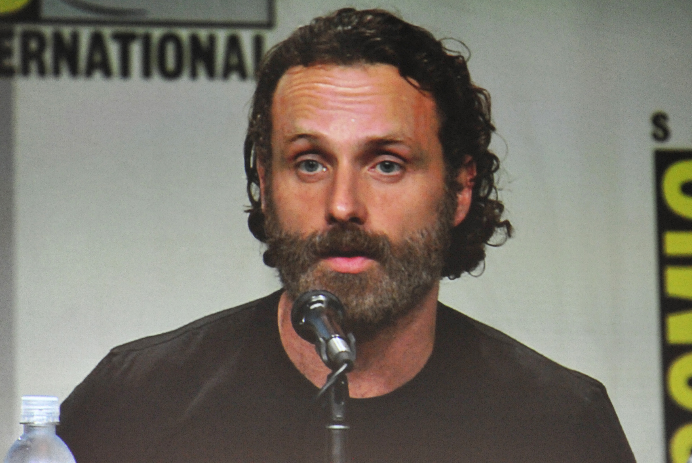
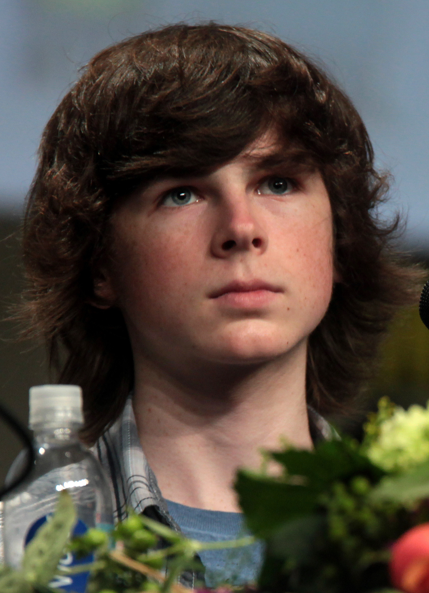
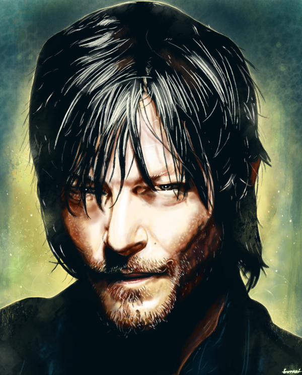

The main protagonist of the entire series is of course, Rick Grimes shown below
Rick is known for undergoing many changes both physical and emotional in order to survive the cruel world before him
He has good values but they are sometimes in question as all he cares about is the survival of his group and his son Carl
Another major protagonist is the son of Rick, Carl Grimes
Carl is known for having to grow up extremely quick in the apocalyptic world they were living in.
He is one of the more badass characters in the show simply for his ability at such a young age.
Another major fan-favourite protagonist is Daryl Dixon.
The younger brother to legendary Merle Dixon, Daryl is a redneck biker type who is widely recoqnized for his signature weapon, the crossbow.
Other notable protagonists include: Michonne, Glenn, Carol.